国・地域の見分け方
- ドメインは.no
- 横断歩道の標識は4本
- ナンバープレートは白か緑色（緑は公用車・商業車）
- 北欧であって速度表記の背景が白ならばノルウェーの可能性が高い
- 北欧は濃い赤色で塗られたログハウスが多い
- 道路の路側帯の破線がスウェーデンと比較して長い北欧の路側帯
- 「Ø・ø」の文字はデンマークとノルウェーでのみ使用される
- 道路名の看板にオレンジの背景が多い (from 『【GeoGuessr】公認プレイヤーによる国当て完全解説！ - Daig_O』)
見つかる標識
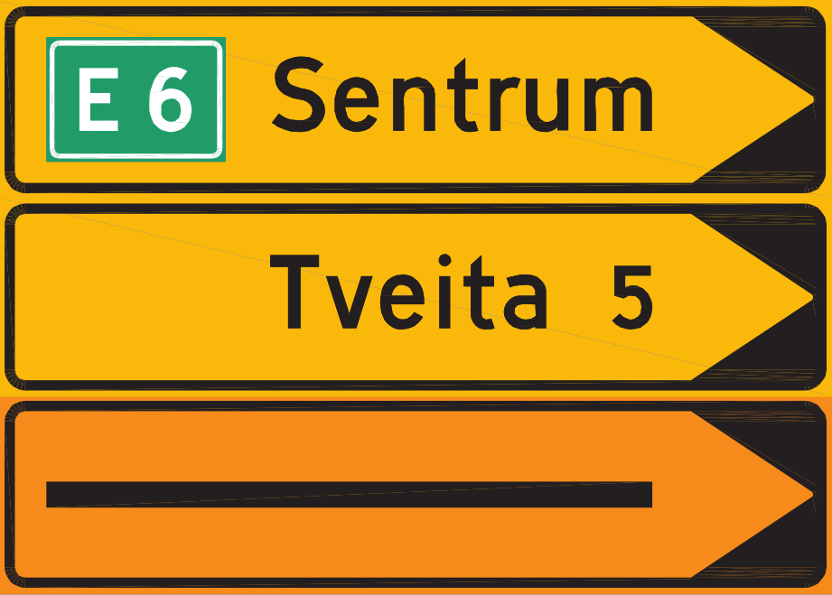
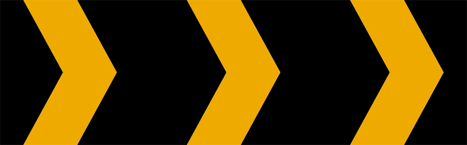
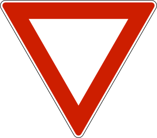
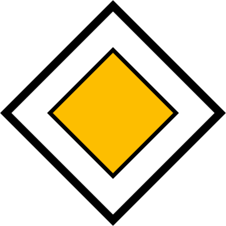
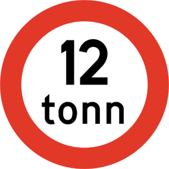
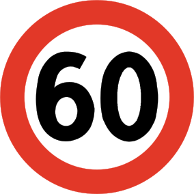
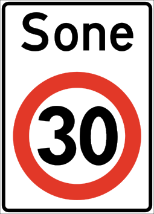
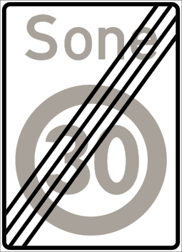
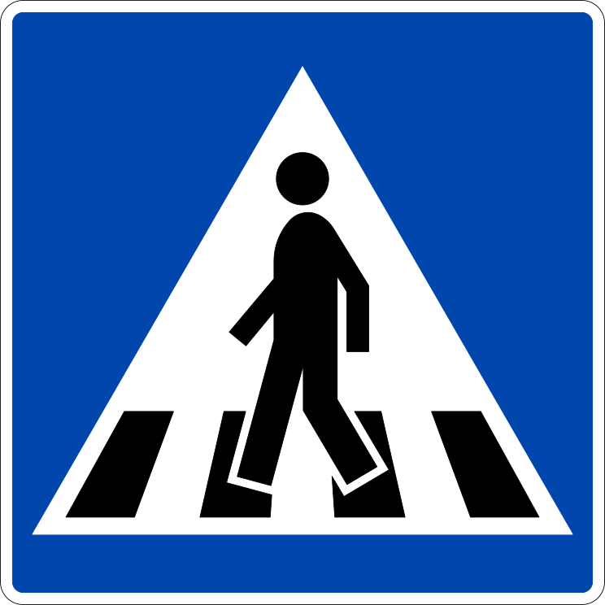
代表的な企業
スウェーデンやノルウェーなどの北欧は濃い赤色（ファールン赤）で塗られたログハウスがある。
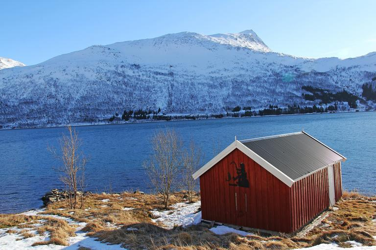
ヨーロッパでナンバープレートが緑なのはノルウェーの商用車かセルビアの農業用車輛のみ。
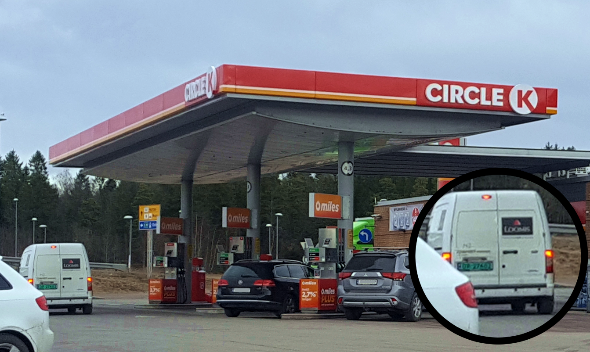

Noorwegen kenteken groen nieuw, CC BY-SA 3.0, wikipedia commons
{kind=link}
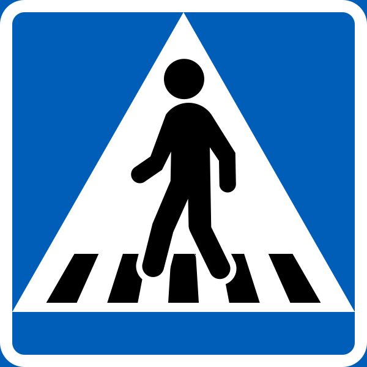
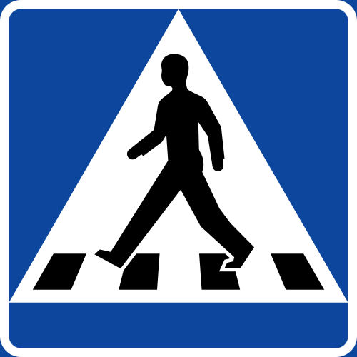
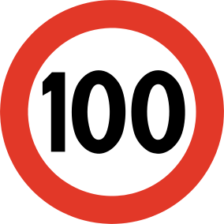
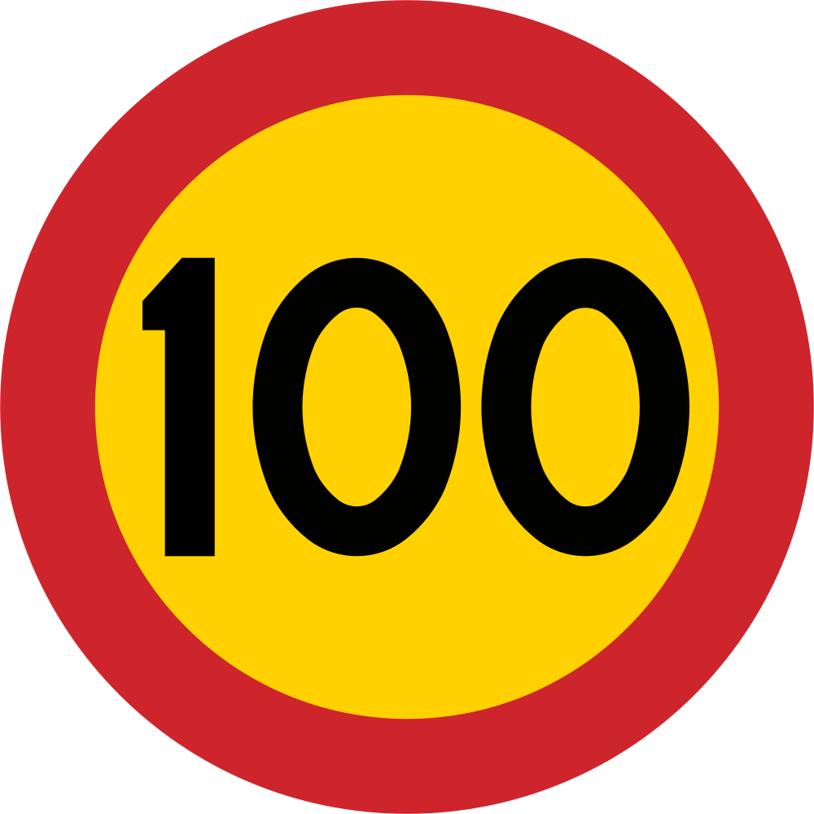
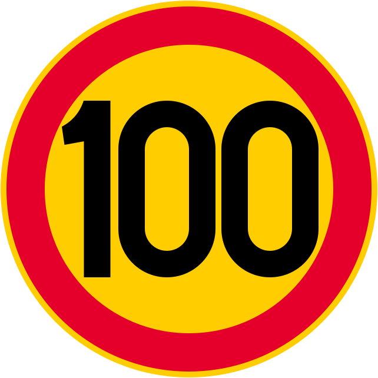
道路名の看板にオレンジの背景が多い (from 『【GeoGuessr】公認プレイヤーによる国当て完全解説！ - Daig_O』)
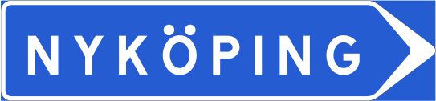
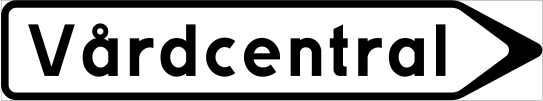
スウェーデン
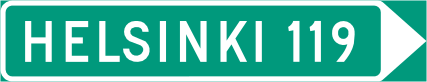
フィンランド
ノルウェー
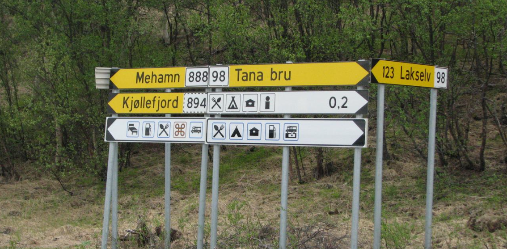
道路の路側帯の破線が長い。左からノルウェー・スウェーデン・フィンランド(参考文献 ダイジェスト：世界マップ初心者講座+質問コーナー | 市民ジョン)。ノルウェーの線の例はこれ。ノルウェーとスウェーデンの国境でも線がはっきりと変わっている。
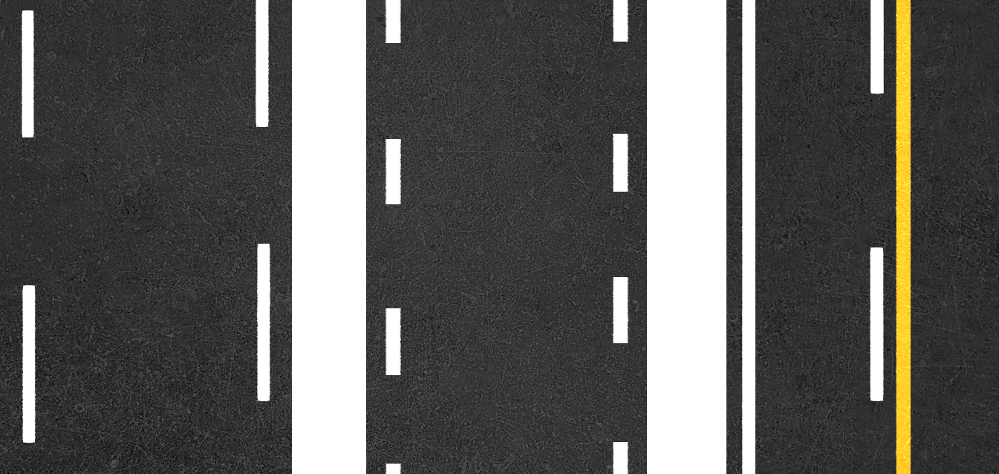
左がノルウェー、右がスウェーデン。
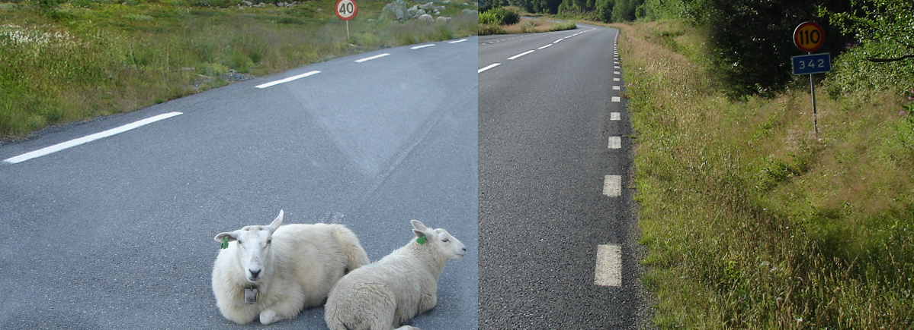
ノルウェーの郵便市場の規制緩和が進み、2002年頃にPosten Norgeは株式会社になった。1647年設立らしい（出典）。
北欧は濃い赤色（ファールン赤）で塗られたログハウスが特徴的(from Wikipedia 『ファールン赤』)。
スカンジナビア3国ではセブンイレブンがあるが他のヨーロッパには少ない。サンドイッチやホットドックのコーナーがある。パンが冷凍状態で売られていた記憶（たぶん）。
なぜか京成電鉄の大株主にノルウェー政府がいる(参考文献 京成電鉄 > 株式の状況)。画像は2023年3月のもの。
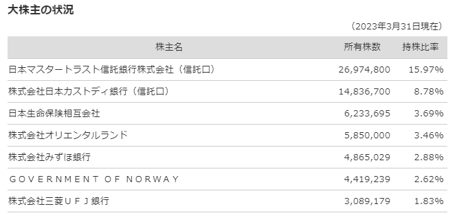
州・地域の絞り込み
代表的な企業の説明
| 企業名 | コード | 説明 | 決算 | 配当履歴 |
|---|---|---|---|---|
| Equinor | NASDAQ | 国営エネルギー会社であり、売上高・時価総額ともにノルウェーでは最大。北海で油田・ガス田を運営しており、北海油田の中でも特に大きいトロールガス田も保有している(参考文献 The Troll field and the Troll A, B and C platforms)。 | Dividend History | |
| Golden Ocean Group | NASDAQ | フロントラインから独立したドライバルク船会社。大型のドライバルク船を多数所有している。 | Dividend History |